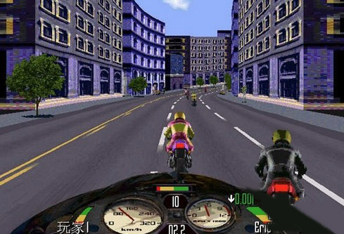
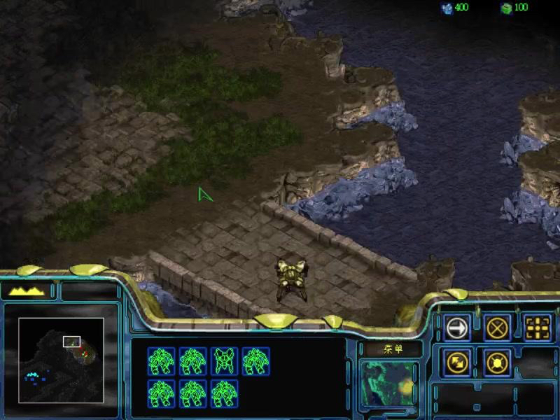
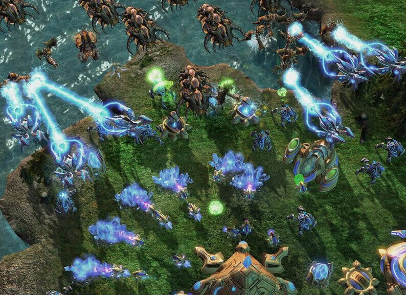

- 00 开篇词 跟我学，你也可以开发一款游戏！.md.html
- 复习课 带你梳理客户端开发的三个重点.md.html
- 第10讲 如何载入“飞机”和“敌人”？.md.html
- 第11讲 如何设置图像的前后遮挡？.md.html
- 第12讲 如何设置精灵的变形、放大和缩小？.md.html
- 第13讲 如何设置淡入淡出和碰撞检测？.md.html
- 第14讲 如何制作游戏资源包和保存机制？.md.html
- 第15讲 如何载入背景音乐和音效？.md.html
- 第16讲 如何在游戏中载入UI和菜单？.md.html
- 第17讲 如何用鼠标和键盘来操作游戏？.md.html
- 第18讲 如何判断客户端的网络连接？.md.html
- 第19讲 如何嵌入脚本语言？.md.html
- 第1讲 游戏开发需要了解哪些背景知识？.md.html
- 第20讲 脚本语言在游戏开发中有哪些应用？.md.html
- 第21讲 如何使用脚本语言编写周边工具？.md.html
- 第22讲 如何选择合适的开发语言？.md.html
- 第23讲 如何定制合适的开发协议？.md.html
- 第24讲 不可忽视的多线程及并发问题.md.html
- 第25讲 如何判断心跳包是否离线？.md.html
- 第26讲 如何用网关服务器进行负载均衡？.md.html
- 第27讲 如何制作游戏内容保存和缓存处理？.md.html
- 第28讲 热点剖析（一）：HTML5技术是如何取代Flash的？.md.html
- 第29讲 热点剖析（二）：如何选择一款HTML5引擎？.md.html
- 第2讲 2D游戏和3D游戏有什么区别？.md.html
- 第30讲 热点剖析（三）：试试看，你也可以编写一款HTML5小游戏！.md.html
- 第31讲 热点剖析（四）：安卓端和苹果端游戏开发有什么区别？.md.html
- 第32讲 热点剖析（五）：如何选择移动端的游戏引擎？.md.html
- 第33讲 热点剖析（六）：AR和人工智能在游戏领域有哪些应用？.md.html
- 第34讲 热点剖析（七）：谈谈微信小游戏的成功点.md.html
- 第35讲 热点剖析（八）：谈谈移动游戏的未来发展.md.html
- 第36讲 热点剖析（九）：谈谈独立开发者的未来发展.md.html
- 第3讲 游戏的发动机：游戏引擎.md.html
- 第4讲 底层绘图接口的妙用.md.html
- 第5讲 构建游戏场景的武器：地图编辑器.md.html
- 第6讲 从0开始整理开发流程.md.html
- 第7讲 如何建立一个Windows窗体？.md.html
- 第8讲 如何区分图形和图像？.md.html
- 第9讲 如何绘制游戏背景？.md.html
- 结束语 做游戏的过程就像是在雕琢一件艺术品.md.html
- 课后阅读 游戏开发工程师学习路径（上）.md.html
- 课后阅读 游戏开发工程师学习路径（下）.md.html
- 捐赠
第2讲 2D游戏和3D游戏有什么区别？
我们知道，游戏的体现形式最主要是2D和3D。最近比较流行的AR/VR等，都是属于3D类的体现形式。关于VR游戏，我会在之后的“热点剖析”模块详细介绍，这里就不多说了。
最初的游戏，2D是绝对的主流。虽然现如今3D游戏大行其道，但是2D游戏还是拥有一席之地。比如我们上一节提到的《返校》，日本光荣公司前几年仍然在推出2D版的《三国志》，以及最近暴雪又复刻的《星际争霸1》高清版。
2D游戏和3D游戏的区别
我在前面已经讲过我为何选择2D游戏作为讲解的对象，也阐述过手机游戏开发的难点。至于3D游戏和2D游戏具体的区别，我还需要再和你讲一讲。
- 呈现画面
3D和2D游戏最大的区别就是，游戏呈现画面的方式有了质的改变。3D较之2D画面有更强大的冲击力和震撼力，就好像VR较之普通3D，对人们视觉的冲击力和震撼力也是质的飞升。
所以，要做出一款好的2D游戏，要比3D游戏下更多的功夫，特别是在游戏的内涵、创意、音乐和细节上面。因为2D游戏先天只能呈现2D画面，所以玩家在入手游戏后，会很快对游戏有一个总体的评价，因此，开发者会想方设法留住用户。而一些3D游戏创意和游戏内容其实都不是非常优秀，只是由于画面突出，效果卓绝，也能吸引不少玩家战斗到最后一关。
- 文件体积
2D游戏的体积基本控制在1G以内。因为2D游戏本身的图片量并不是很大，图片体积也就不会很大。而3D游戏的体积基本都是2~4G，现在甚至会有30G、40G，甚至60、100多个G。那是因为3D模型、骨骼、动作、贴图等资源占用了大量的空间，高清贴图动辄几十甚至上百兆都是正常的体积，所以3D游戏比2D游戏体积大这是很重要的一个方面。
“伪3D”游戏
我们熟知的3D游戏，有广义、狭义之分。狭义的3D游戏是指Polygon游戏，也就是多边形游戏，需要靠纯3D计算技术实现操作。而广义的3D游戏，则包括了“伪3D”游戏。所谓伪3D，其实就是2D+3D，也有人称之为2.5D。其实就是将2D和3D技术结合起来，实现3D游戏的体验。
类似《暴力摩托》这样的早期3D游戏，其实就是“伪3D”，它基本上是通过模拟计算和光线跟踪（Raycasting）算法做出来的。因此，2D游戏引擎无法制作狭义的3D游戏，而3D游戏引擎则可以做2D游戏。
比如，《梦幻西游》可以称作“伪3D”，而《暴力摩托》、早期的赛车游戏、《DOOM》等，都可以归类为广义的3D游戏。
我们继续拿《暴力摩托》，或者更早期的赛车游戏来举例。

这类游戏的内存中，存在两种甚至多种主角赛车的形态图像，比如近景摩托车、远景摩托车。在判断速度大小之后，我们可以对图像进行替换，以此让玩家感觉到远近；背景和地面则是按照线条来处理，也就是将一副背景图片分成N条线，而第N+1条线会比第N条放大一倍，以此达到给赛道设置不同远近的效果；根据玩家赛车的前后位置，来判断绘制每一行的“放大”。而玩家控制的赛车则是一个活动块。每个活动块都存放有不同远近大小的图像形态，来控制前后图像大小。
国外有不少专门研究这类“伪3D”技术的网站，我在这里推荐几个，你有兴趣的话可以去看看。 http://www.extentofthejam.com/pseudo/ http://lodev.org/cgtutor/raycasting.html https://codeincomplete.com/posts/javascript-racer-v1-straight/
那么，用3D游戏引擎制作2D游戏究竟是怎么回事呢？就是将3D游戏的视角和控制锁定在只有2D能呈现的范围内，让玩家误以为是2D游戏，但是这类游戏可以借助3D引擎来优化游戏的声光和绚丽的特效，让2D游戏更大放异彩。
再者，在移动端的表现上，2D游戏其实和3D游戏不相上下。
首先，利用小屏幕观看3D画面非常累。由于手机计算能力有限，所以目前移动端的3D游戏大部分都还是以低模为主。浅显地讲，高模就是相当精细的模型和贴图，由无数个面（看需求）组成的模型，而低模一般会为了计算效率考虑控制其3D面数，贴图也相对简单。
其次，在移动设备上，因为移动平台的硬件限制，3D引擎的表现一定不如电脑或者主机游戏来得好。这样一来，2D游戏其实有非常大的施展空间。
2D游戏和3D游戏在电子竞技中的区别
我们再来看看电子竞技这一块。
我们都知道《星际争霸》在前几年一直是韩国的“国技”。《星际争霸1》的选手水平占据着全球巅峰位置。2015年之后，由于圈内丑闻加上《星际争霸2》的出现，《星际争霸1》的三大联赛几乎销声匿迹。然而《星际争霸2》却没有想象中那么火爆。虽然有《DOTA》《LOL》的泰山压顶之势，但总体原因除了《星际争霸2》的平衡性外，还有一个原因是，《星际2》的3D画面并不完全适合电视转播。
我们拿《星际争霸1》的2D画面和《星际争霸2》的3D画面进行比较。这里，第一幅图是《星际1》的画面，第二幅图是《星际2》的画面。


你可以看到，3D画面几乎要在高清画质的情况下才能看清楚单位兵种、战斗场面，而且很多时候都是一团黑漆漆、绿乎乎的3D画面堆在一起。《LOL》看似没有这种情况，是因为大家都熟悉每个英雄的形象，加上地图比较明亮，兵种没有《星际争霸》那么多。
我们再来看《星际争霸1》的画面，层次分明，清晰可辨，哪怕在低画质的情况下仍然可以一眼看出究竟是什么兵种，有的时候，甚至连地雷都能看清楚。当然，这并不是说3D比不过2D，而是在某些特殊情况和场景下，3D图形会有一些缺陷。
由于表现方式不同，3D游戏最典型的就是比2D游戏的坐标多出一个Z值。所谓的Z值，就是除了X、Y的长宽之外，还多了一个高度值。这个值我们也可以用在2D游戏中。
在PS时代，有不少2D和3D结合在一起的游戏。比如，《生化危机》系列的1、2、3部，都属于2D静态场景、3D模型。再比如，《最终幻想》系列的7、8。玩家在世界地图行动的时候，使用的是3D画面，但是在游戏主场景里面，使用的仍然是《生化危机》那种3D建模。2D渲染场景使用伪3D技术，一般是因为机能限制或者3D技术不成熟，但实际的实现难度不会比纯3D技术更简单。
3D游戏和2D游戏在美术上的区别
从美术方面来说，3D游戏和2D游戏的区别也相当大。
在3D建模和骨骼方面，一个熟练的美工，只需要在原有模型上添加或者修改某些物件。比如给某个生物加一个角，给它增加一个小小的动作。这样模型的修改，对于美工来说，是比2D美术要简单的。因为2D美术一般都是手绘，所以如果需求改动特别明显，那一系列跟该角色相关的图案都需要手工调整，这是非常大的工作量。
准确地讲，2D游戏是2D图像图形进行线性的一些变换将之渲染至屏幕而成。而3D的游戏是将3D的图形图像进行3D线性变换然后投影（Projection）至显示器（显示器是2D的）而成。显示器在视觉上形成远近大小的效果，让我们看起来是立体的。事实上，我们眼睛的视网膜也是这么工作的。
游戏的本质
说了这么多2D游戏和3D游戏的区别，最后，我想跟你谈一点轻松的内容。游戏的本质究竟是什么？不管是作为开发者，还是策划、运营人员，或者是打游戏的玩家，我想请你思考一下这个问题。
有人说，游戏的本质是人类的层次需求，并且还进行了细致的分析。其实不需要这么复杂，要我说，游戏的本质就是供人娱乐，给人各种开心的、刺激的、恐怖的感官刺激。
有些人喜欢复杂策略类的游戏，那么繁琐复杂的《太空帝国》就能满足他们。有些人喜欢快节奏的游戏，那么赛车或者打一局就走的《FPS》可以满足你的胃口；像我就喜欢悠哉悠哉地不受任务限制，那么“GTA系列”和“老滚系列”就是我的选择。
那如何定义一款成功的游戏呢？如何做出一个爆款游戏呢？我想说的是，一款游戏的成功离不开美术、音乐等等这些硬指标，然而这些指标却不能决定这款游戏是否能深得人心。每一个人心中的判断并不一样，大量的人玩《王者荣耀》，但这并不代表它是优秀的游戏，只能说是成功的游戏。毕竟，青菜萝卜各有所爱。
小结
这一节内容差不多了，总结一下，你需要记住这几点：
3D和2D游戏的区别主要体现在呈现画面和文件体积上；
借助3D引擎可以提升2D游戏的声光和特效效果；
成功的游戏不一定是优秀的游戏。
最后，给你留个思考题吧。你觉得一款成功的游戏需要具备什么样的特点呢？
欢迎留言说出你的看法，我在下一节的挑战中等你！
© 2019 - 2023 Liangliang Lee. Powered by gin and hexo-theme-book.